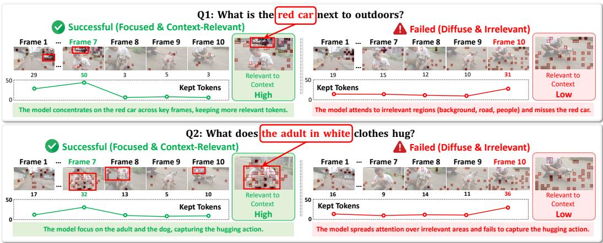

Figureure 4 · : Evolution and structural divergence of CoRe heads on the MMDocIR datFigure 4: Evolution and structural divergence of CoRe heads on the MMDocIR dataset. As model scale increases, attention patterns shift from broadly distributed activations (4B) to a pronounced deeplayer bottleneck (32B). Cross-architecture comparisons further reveal distinct attention topologies: Qwen3-VL exhibits sparse localization, Llava-onevision shows moderate dispersion, and InternVL3.5 presents dense, widespread activations.这张图概括 Mechanistic Insights into Functional Sparsity 的整体方法流程。阅读时先看模块之间传递的训练信号，再看作者如何把目标拆成可优化的子问题。

Figureure 2 · : Mechanistic evidence of functional specialization in MLLMs attentionFigure 2: Mechanistic evidence of functional specialization in MLLMs attention heads on VidSTG. Left (CoRe Heads): A sparse subset of specialized heads acts as precise information extractors, surgically isolating context-relevant entities (e.g., “red car”, “adult in white”) by filtering background noise across key frames. Right (Bottom Heads): The vast majority of heads exhibit semantic dispersion, scattering attention across irrelevant regions and failing to ground the instruction.这张可视化用来解释 Mechanistic Insights into Functional Sparsity 学到的中间表征或对齐关系。重点看它是否支持正文里的机制判断。